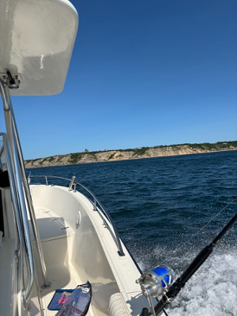
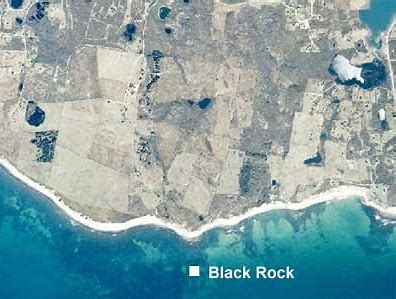

Fishing Block Island
Block Island is well known for its diverse fishing grounds on and around the island.
People from all along the east coast can be found here, from Nantucket to southern Massachusetts.
This area has a place for almost any local fish you want to target.
North Rip
The North Rip off Block Island is a shallow reef located off the northern point of the island.
Primarily averaging around 40 feet deep, though it can be as shallow as 12 feet at points.
This is a great area for Striped Bass and Bluefish.
Common Fishing Practices
- Drifting with live eels
- Trolling
- Diamond jig jigging
South East Lighthouse

On the southeast side of Block Island near Mohegan Bluffs.
This is an ideal area for Striped Bass along with common bottom fish
such as scup, Black sea bass, and fluke.
South side of Block Island

On the south side of Block Island near Mohegan Bluffs.
This is a shallow sandy bottom area just a few feet from shore.
Often you can find a fleet of boats out there bottom fishing for fluke,
Black Sea Bass, Bluefish, and Scup.